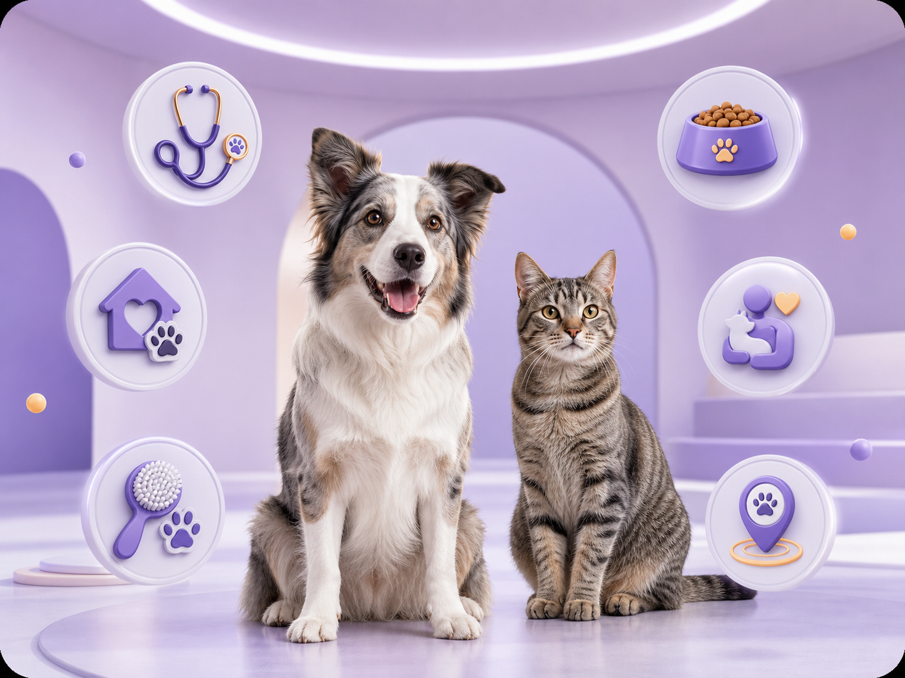

Adopción
Conoce mascotas que buscan hogar, revisa su historia y encuentra una conexión que pueda convertirse en familia.
Explorar adopciones →Servicios Peluvi
Explora opciones para cuidar, consentir, proteger y encontrar compañía para tu mascota. Peluvi organiza cada servicio para que decidir sea más fácil.

6 categorías · Una experienciaCuidado cerca de tiSeis formas de ayudar
Cada categoría conecta necesidades reales con información clara, proveedores y acciones sencillas.
Conoce mascotas que buscan hogar, revisa su historia y encuentra una conexión que pueda convertirse en familia.
Explorar adopciones →Compara clínicas, horarios, servicios y profesionales antes de elegir la atención indicada.
Ver veterinarias →Encuentra baños, cortes, cuidado de uñas y servicios especializados según el tipo de mascota.
Ver peluquerías →Descubre alimentos, accesorios, juguetes y productos publicados por negocios aliados.
Explorar tiendas →Conecta con opciones de paseos, visitas, guardería y cuidado en casa para cada rutina.
Ver cuidadores →Publica y consulta reportes para movilizar a la comunidad cuando una mascota necesita ayuda.
Conocer SOS →Una experiencia sencilla
Indica qué estás buscando y accede a opciones organizadas para tu mascota.
Revisa perfiles, servicios, ubicación y datos importantes antes de contactar.
Guarda favoritos, solicita información o inicia la acción adecuada desde Peluvi.
Regresa al buscador o descubre cómo será la experiencia completa en la app.